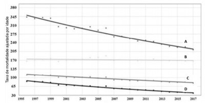
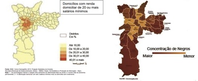
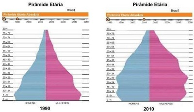
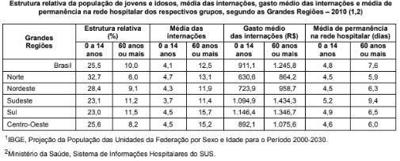
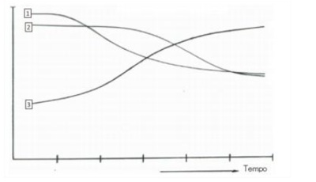

Questão 1 · A carga de doenças no Brasil tripla carga de doenças · 4000190635Para Eugênio Vilaça Mendes (2010), em saúde que se manifesta, em maior ou menor grau, em todos os países do mundo, decorre de uma incoerência entre uma situação de saúde de transição demográ ca e de transição epidemiológica completa nos países desenvolvidos e [...] tripla carga de doenças nos países em desenvolvimento e o modo como se estruturam as respostas sociais deliberadas às necessidades das populações". No Brasil, a tripla carga de doenças de relaciona com
A doenças crônicas; transtornos mentais e comportamentais; e neoplasias.
B causas externas; neoplasias; e doenças endócrinas, metabólicas e nutricionais.
C doenças infecciosas, parasitárias e problemas de saúde reprodutiva; neoplasias; e transtornos mentais e comportamentais.
D doenças endócrinas, metabólicas e nutricionais; transtornos mentais e comportamentais; e doenças infecciosas e parasitárias.
E doenças infecciosas, parasitárias e problemas de saúde reprodutiva; causas externas; e doenças crônicas.
Revisar: possível letra faltando em enunciado
Questão 2 · A carga de doenças no Brasil tripla carga de doenças · 4000189435Para Eugênio Vilaça Mendes (2010), em As redes de atenção à saúde, “a crise contemporânea dos sistemas de atenção à saúde que se manifesta, em maior ou menor grau, em todos os países do mundo, decorre de uma incoerência entre uma situação de saúde de transição demográ ca e de transição epidemiológica completa nos países desenvolvidos e [...] tripla carga de doenças nos países em desenvolvimento e o modo como se estruturam as respostas sociais deliberadas às necessidades das populações”. No Brasil, a tripla carga de doenças de relaciona com
A doenças crônicas; transtornos mentais e comportamentais; e neoplasias.
B causas externas; neoplasias; e doenças endócrinas, metabólicas e nutricionais.
C doenças infecciosas, parasitárias e problemas de saúde reprodutiva; neoplasias e transtornos mentais e comportamentais.
D doenças endócrinas; metabólicas e nutricionais; transtornos mentais e comportamentais; e doenças infecciosas e parasitárias.
E doenças infecciosas, parasitárias e problemas de saúde reprodutiva; causas externas; e doenças crônicas.
Revisar: possível letra faltando em enunciado
Questão 3 · Coef iciente de Natalidade Taxa bruta de natalidade · 4000188644Os indicadores de saúde são essenciais para analisar a situação de uma coletividade, fazer comparações e avaliar mudanças ao longo do tempo. Observe o Quadro 1 e responda às questões 52 a 55. Quadro 1 – Dados ctícios sobre óbitos e população residente. Cidade X, 2022. 1 – Dados ctícios sobre óbitos e população residente. Cidade X, 2022. Dados sobre: Total de óbitos por todas as causas (a); Óbitos de menores de 1 ano de idade (b); Óbitos de mulheres em todas as idades (c); Óbitos de homens em todas as idades (d); Óbitos por câncer de próstata (e); Óbitos de mulheres na gravidez, parto e puerpério (f); População total (g); Nascidos vivos (h). Assinale a alternativa que contém a fórmula CORRETA para o cálculo do indicador Coe ciente de Natalidade na cidade X, em 2022.
A h / g x 100.
B h / b x 100.
C h / g x 1.000.
D h / f x 100.
E h / c x 1.000.
Revisar: possível letra faltando em enunciado
Questão 4 · Mortalidade Geral · 4000188348As três principais causas de morte por câncer nos homens, excluindo os cânceres de pele basocelular e carcinoma in sito, são:
A Próstata, bexiga e leucemias.
B Pulmão e brônquios, colorretal e leucemias.
C Colorretal, leucemias e pâncreas.
D Próstata, pulmão e brônquios e colorretal.
E Pulmão e brônquios, melanoma e colorretal.
Questão 5 · Coef iciente ou Taxa de Mortalidade Inf antil · 4000187946Em relação ao panorama nacional de saúde no Brasil podemos afirmar que:
A A taxa média de crescimento anual da população também está aumentando: de 0,8% em 1980 para 2,5% em 2018.
B A taxa de fertilidade total de 5,8 em 1970 reduziu para 1,77 em 2018 devido ao novo papel da mulher na sociedade e a redução de acesso a métodos contraceptivos.
C A taxa de mortalidade infantil (TMI) caiu de 146,6/1.000 nascidos vivos em 1940 para 12,8/1.000 nascidos vivos em 2018 que ocorreu em todas as regiões, mas mais notadamente no Nordeste.
D A obesidade está na iminência de substituir o baixo peso como a principal categoria de distúrbio nutricional em todos os grupos de sexo, categoria social e faixa etária no país.
Questão 6 · A carga de doenças no Brasil tripla carga de doenças · 4000187710O per l epidemiológico do Brasil se caracteriza por uma tripla carga de doenças com a seguinte distribuição das cargas de doenças:
A 75% de condições crônicas com doenças crônicas, problemas maternos e perinatais e 25% de condições agudas com doenças infecciosas, parasitárias desnutrição e causas externas.
B 50% de condições crônicas com doenças crônicas, problemas maternos e perinatais e 50% de condições agudas com doenças infecciosas, parasitárias desnutrição e causas externas.
C 25% de condições crônicas com doenças crônicas, problemas maternos e perinatais e 75% de condições agudas com doenças infecciosas, parasitárias desnutrição e causas externas.
D 60% de condições crônicas com doenças crônicas, problemas maternos e perinatais e 40% de condições agudas com doenças infecciosas, parasitárias desnutrição e causas externas.
Questão 7 · Situação Epidemiológica do Brasil · 4000187692Segundo vários autores no campo da saúde pública, a crise contemporânea dos sistemas de saúde no mundo ocorre por:
A Doenças transmissíveis reemergentes e excesso de lesões por causas externas que dificultam a organização dos sistemas de saúde.
B Grande número de casos de iatrogenias e falta de qualidade no cuidado por dificuldades na relação das equipes assistenciais com os usuários dos sistemas de saúde.
C Aumento crescente de uso de tecnologias duras com alto custo para os sistemas de saúde em detrimento da organização da atenção primária e secundária.
D Desencontro entre uma situação de saúde determinada por transições demográfica, nutricional e tecnológica e por um perfil epidemiológico dominado pelas condições crônicas.
Questão 8 · Mortalidade Específ ica · Vigilância Epidemiológica · Sistema de Inf ormação sobre Mortalidade SIM · 4000186975Em relação a situação de saúde da população brasileira podemos afirmar, EXCETO:
A As doenças cardiovasculares são a principal causa de morte no Brasil. As doenças cerebrovasculares e a doença isquêmica do coração são as principais causas, seguidas pelas doenças hipertensivas e pela insuficiência cardíaca.
B O aumento na prevalência da diabetes mellitus pode refletir aumento na incidência, decorrente da epidemia de obesidade e do envelhecimento populacional.
C A mortalidade padronizada atribuível ao câncer colorretal está aumentando e a atribuível ao câncer gástrico está caindo entre homens e mulheres, acompanhando tendências de vários outros países.
D A mortalidade ajustada por idade para doenças respiratórias crônicas está aumentando tanto para Doença Pulmonar Obstrutiva Crônica (DPOC) como para ASMA.
E Os homicídios, têm sido, desde a década de 1980, os grandes responsáveis pelo aumento da mortalidade relacionada com a violência.
Questão 9 · Expectativa de vida ao nascer ou Esperança de vida ao nascer sigla e0 · 4000186357Assinale a opção INCORRETA referente à esperança de vida ao nascer.
A é um indicador geral das condições de vida e saúde de uma população.
B seu cálculo é feito determinando-se a relação do tempo cumulativo vivido por uma geração com o número de nascimentos dessa geração.
C representa o número médio de anos que ainda podem ser vividos pelos indivíduos que sobreviveram até aquela idade em uma população.
D reflete o risco de mortalidade infantil para uma população.
E reflete o padrão de mortalidade de uma população.
Questão 10 · Transição Demográf ica no Brasil · Fases da Transição Demográf ica · Transição Demográf ica · 4000185305O Brasil envelhece de forma ra 23 milho aumentou para 74 anos, sendo 77,7 anos para a mulher e 70,6 anos para o homem. Disponível em: <https://bvsms.saude.gov.br/bvs/publicacoes/diretrizes_cuidado_ pessoa_idosa_sus.pdf>. Acesso em: dez. 2022. Quanto ao aumento da expectativa de vida da população brasileira, pode-se dizer que se deve à
A redução da prevelência de doenças crônicodegenerativas.
B mudanças no acesso à saúde e nas condições de vida.
C redução da base da pirâmide etária e alargamento do ápice.
D redução da incidência de doenças cardiovasculares e diabetes.
Questão 11 · Transição Demográf ica no Brasil · 4000185304O Brasil envelhece de forma ra 23 milho aumentou para 74 anos, sendo 77,7 anos para a mulher e 70,6 anos para o homem. Disponível em: <https://bvsms.saude.gov.br/bvs/publicacoes/diretrizes_cuidado_ pessoa_idosa_sus.pdf>. Acesso em: dez. 2022. Considerando o envelhecimento da população brasileira, pode-se afirmar que
A há necessidade de ampliação de cuidados de prevenção terciária.
B a prevenção quaternária visa as complicações de história natural das doenças crônicas.
C o perfil mórbido determina que os cuidados hospitalares são prioritários sobre os domiciliares.
D o termo polifarmácia refere-se à dispensação de medicações indispensáveis para os idosos.
Questão 12 · Teorias de Transição Epidemiológica · Transição Epidemiológica no Brasil · 4000184761Situação Epidemiológica do Brasil As mudanças nos perfis de adoecimento, morte e incapacidades nas populações, especificamente no que se convencionou chamar de transição epidemiológica, constituem um fenômeno que assume características bem particulares no contexto brasileiro, quando comparado à grande maioria dos países industrializados de economia central. Sobre este processo no Brasil, é
A a contra-transição refere-se à reintrodução de agentes infecciosos, ou a persistência e recrudescimento de outros, que sinalizam para uma natureza não unidirecional, diferente do modelo original proposto por
B o padrão epidemiológico se caracteriza pela persistência de endemias em algumas regiões do país, por importantes variações geográficas nos padrões epidemiológicos e de distribuição de serviços de saúde e por coeficientes de mortalidade equiparados aos dos países centrais.
C não houve uma transição de contextos epidemiológicos propriamente dita no cenário brasileiro, e sim uma superposição deles, com perfis característicos de diferentes padrões, resultantes das desigualdades, configurando uma transição “prolongada” ou “polarizada”.
D a polarização geográfica evidenciando importantes contrastes é uma das características do contexto epidemiológico brasileiro, associada à “polarização social”, que se manifesta pelas disparidades nos indicadores de mortalidade e morbidade entre diferentes grupos sociais.
Questão 13 · Transição Demográf ica no Brasil · Transição Demográf ica · Outros · 4000184758Do ponto de vista demográ co e epidemiológico, verifica-se o progressivo aumento da expectativa de vida e o consequente envelhecimento da população, acompanhados de mudanças no quadro de morbidade, que se torna mais complexo. Diante disto, pode-se afirmar, quanto à atenção à saúde, que:
A diante do envelhecimento experimentado na transição demográfica, a única medida capaz de promover a saúde é o reforço das práticas e instituições de cuidados paliativos.
B a atenção hospitalar deve ser priorizada, já que as diversas modalidades de Atenção Primária em Saúde não conseguem reverter minimamente as condições básicas de adoecimento.
C deve-se privilegiar a promoção de saúde, a prevenção de doenças e, quando necessário, o tratamento ambulatorial, pois a medicina não oferece mais apenas a cura, mas ainda a possibilidade de deter a evolução natural desses males e de assegurar uma boa qualidade de vida para os seus portadores.
D o desenvolvimento tecnológico não acompanhou a transição epidemiológica e demográfica, não se permitindo avançar em práticas ambulatoriais e demais terapêuticas, o que tem significado a necessidade de crescimento da oferta de leitos hospitalares, não sendo mais recomendada a expansão de hospitais-dia e cuidados intermediários.
Revisar: possível letra faltando em enunciado
Questão 14 · Índice de Vulnerabilidade Social IVS · 4000183551Por ser mais abrangente, o conceito de vulnerabilidade atualmente é mais aceito do que o conceito de suscetibilidade. As dimensões da vulnerabilidade são:
A social, individual e programática;
B biológica, física e mental;
C ambiental, genética e comportamental;
D econômica, familiar e ocupacional.
Questão 15 · Doenças crônicas não transmissíveis · 4000181784De acordo com o Plano de Ações Estratégicas para o Enfrentamento das Doenças Crônicas e Agravos Não Transmissíveis no Brasil, 2021 – 2030, do Ministério da Saúde, a
A região Norte do Brasil apresentou, entre 2000 e 2019, as maiores taxas de mortalidade por suicídio em todo o período analisado.
B maior mortalidade proporcional pelo suicídio no Brasil, entre 2000 e 2019, ocorreu na faixa etária de 40 a 59 anos.
C redução das taxas de suicídio no Brasil, entre 2000 e 2019, foi da ordem de 42,6%.
D mortalidade por suicídio, no Brasil, foi maior para o sexo masculino entre 2000 e 2019.
Questão 16 · Taxa de f ecundidade total Taxa de f ecundidade geral · Coef iciente de Fecunidade Taxa de f ecundidade · 4000193719O principal determinante da dinâmica demográfica é:
A taxa de envelhecimento.
B taxa de fecundidade total.
C taxa bruta da mortalidade.
D taxa de maiores de 60 anos.
Questão 17 · Doenças crônicas não transmissíveis · Atividade f ísica · Atividade f ísica · 4000189598O sedentarismo como importante Fator de Risco está, na maioria das vezes, associado:
A Direta ou indiretamente às causas ou ao agravamento de várias doenças, tais como obesidade, diabetes, hipertensão arterial, ansiedade, depressão, dislipidemia, aterosclerose, doença pulmonar, osteoporose e câncer.
B Direta ou indiretamente às causas ou ao agravamento de várias doenças, tais como obesidade, diabetes, hipertensão arterial, ansiedade, depressão, dislipidemia, aterosclerose, doença pulmonar, osteoporose e não câncer.
C Direta ou indiretamente às causas ou ao agravamento de várias doenças, exceto obesidade, diabetes, hipertensão arterial, ansiedade, depressão, dislipidemia, aterosclerose, doença pulmonar, osteoporose e câncer.
D Direta ou indiretamente às causas, mas não ao agravamento de várias doenças, tais como obesidade, diabetes, hipertensão arterial, ansiedade, depressão, dislipidemia, aterosclerose, doença pulmonar, osteoporose e câncer.
Questão 18 · Doenças crônicas não transmissíveis · 4000189595A relevância da dieta na gênese das doenças crônicas não transmissíveis (DCNT) encontra-se bem documentada na literatura. Sendo correto que:
A O conjunto dessas doenças é considerado um dos menos importantes problemas de saúde pública da atualidade e responde por aproximadamente 71% da mortalidade mundial.
B O conjunto dessas doenças é considerado um dos mais importantes problemas de saúde pública da atualidade e responde por aproximadamente 7% da mortalidade mundial.
C O conjunto dessas doenças é considerado um dos mais importantes problemas de saúde pública da atualidade e responde por aproximadamente 71% da mortalidade mundial.
D O conjunto dessas doenças não é considerado importante problema de saúde pública da atualidade e responde por aproximadamente 71% da mortalidade mundial.
Questão 19 · Mortalidade Específ ica · Mortalidade · 4000175890Segundo DUNCAN et al (2014) as doenças cardiovasculares são a principal causa de mortalidade no Brasil, com destaque para as doenças cerebrovasculares e a doença isquêmica do coração, seguidas pelas doenças:
A orovalvares e hipertensivas.
B hipertensivas e insuficiência cardíaca.
C orovalvares e insuficiência cardíaca.
D hipertensivas e condições musculoesqueléticas.
E congênitas do coração e diabetes mellitus.
Questão 20 · Fatores que inf luenciam na Expectativa de vida · 4000175538A região A tem esperança de vida ao nascer de 79 anos; a região B, de 70 anos. Sobre isso, assinale a alternativa correta:
A o município A deve ter melhores condições de vida e de saúde
B o município B deve ter altos índices de óbitos por violência
C a diferença entre as regiões não é grande e pode ser superada em 2 a 3 anos
D inicialmente, é preciso analisar as características étnicas das populações dos municípios
Questão 21 · Transição Demográf ica · 4000175422“Acompanhando uma tendência mundial, o crescimento da população brasileira vem diminuindo nas últimas quatro décadas. [...] Além de estar crescendo menos, a população brasileira também apresenta outra característica: o envelhecimento.” (Coleção Almanaque Abril. nº 4. 2004. p. 4) Este processo de mudanças no per l da população brasileira, que é denominado “transição demográ ca”, tem como características: I. O aumento da longevidade e da queda da fecundidade e da mortalidade, sobretudo, com o progresso da medicina e das condições sanitárias. II. A diminuição do número de lhos por famílias em razão das transformações econômicas e sociais que levaram a mulher ao mercado de trabalho. III. A mudança no desenho da pirâmide etária brasileira que passa a apresentar base mais estreita e topo mais largo. IV. O aumento da participação dos homens na pirâmide etária, que passaram a viver mais que as mulheres, as quais, tornaram-se mais expostas à mortalidade por homicídios e acidentes. V. Estão CORRETAS apenas as proposições
A I, II e III.
B III e IV.
C I, III e IV.
D II e III.
E I, II e IV.
Revisar: possível letra faltando em enunciado
Questão 22 · Transição Demográf ica · 4000175420“Brasil discute nesta semana com ministros de países do Brics – grupo de países emergentes integrado pela Rússia, Índia, China e África do Sul – como conter a aceleração do envelhecimento da população, entre outros assuntos. Para o subsecretário da Política de Assuntos Estratégicos (SAE) da Presidência da República, Ricardo Paes de Barros, o país não está sabendo construir barreiras para conter o problema, também enfrentado pelos chineses”. DINIZ, F. País discute com Brics como conter avanço do envelhecimento.Portal Terra, 10 fev. 2015. Disponível em: http://economia.terra.com.br. Acesso em: 05 jun. 2015. O principal objetivo em conter o envelhecimento demográfico em um país é:
A A elevação das taxas de desemprego.
B A redução dos gastos previdenciários.
C O controle dos índices de pobreza.
D O aumento da esperança de vida.
E A redução da “explosão demográfica”.
Questão 23 · Transição Demográf ica · 4000175419É CORRETO afirmar-se sobre as características atuais da estrutura da população brasileira:
A No Brasil, o crescimento vegetativo ou natural continua apresentando índices muito baixos, típicos de países desenvolvidos.
B De 1992 para 2001, a participação dos menores de 10 anos na população total vem aumentando de 18,7% para 22,1%.
C A atual estrutura da população brasileira apresenta aumento das taxas de natalidade e de mortalidade e redução da expectativa de vida.
D No processo de transição demográfica, vem aumentando a participação da população de jovens e reduzindo-se a de idosos no conjunto total da população.
E No processo de transição demográfica, vem se reduzindo a participação da população jovem e aumentando a de idosos no conjunto total da população.
Questão 24 · Taxa de f ecundidade total Taxa de f ecundidade geral · Transição Demográf ica · 4000175418O país já teve taxa de fecundidade de nação africana – 5,8 lhos por mulher, em 1970. Se essa taxa se mantivesse, a população hoje seria de 300 milhões de habitantes. Como essa taxa caiu para 1,8 lho por mulher, a população atual é de 193 milhões. [...]” (REVISTA VEJA. São Paulo: Ed. Abril, a. 43, n. 27, p. 97, 7 jul. 2010.) A taxa de fecundidade é um dos fatores da dinâmica populacional e re ete várias tendências da sociedade brasileira e mesmo mundial. Escolha a alternativa CORRETA sobre a demografia e sua dinâmica:
A O crescimento da população mundial sempre causou polêmicas. No século XVIII, Thomas Malthus já alertava sobre a falta de alimentos para uma população mundial que cresceria descontroladamente e divulgou a sua teoria demográfica. Essa teoria não foi mais utilizada, uma vez que a produção de alimentos atende a toda a população mundial.
B O custo de formação do indivíduo é maior nos países desenvolvidos em razão da necessidade de dar educação mais completa, de maior quantidade de roupas, material escolar, aparelhos eletrônicos e proibição de trabalho para menores. Tudo isso pode levar a um aumento da taxa de natalidade.
C O superpovoamento é sempre relativo e se altera com as mudanças econômicas, sociais e tecnológicas. Os países mais desenvolvidos foram os primeiros a terem suas taxas de natalidade em declínio, e um aumento da expectativa de vida, seguidos de imediato pelos países mais pobres.
D Quando a taxa de fecundidade de um país é muito baixa (inferior a 2,1%), compromete a reposição da população que morre, ocorrendo, muitas vezes, falta de mão-de-obra e levando a um incentivo às migrações.
E A dinâmica demográfica dos homens pode ser explicada somente pelos mecanismos naturais, desconsiderando os mecanismos culturais e econômicos de regulação.
Questão 25 · Indicadores especiais de mortalidade · 4000169441O gráfico acima mostra as tendências nas taxas de mortalidade por doenças cardiovasculares (DCV), doenças isquêmicas do coração (DIC), doenças cerebrovasculares (DCbV) e câncer, no Brasil, entre 1996 e 2017. Sendo assim, assinale a alternativa que associa corretamente as quatro curvas (A, B, C e D) com as causas de morte.

A A – câncer, B – DCV, C – DIC, D – DCbV
B A – DCbV, B – câncer, C – DCV, D – DIC
C A – DIC, B – câncer, C – DCV, D – DCbV
D A – DCV, B – câncer, C – DIC, D – DCbV
E A – DCV, B – DIC, C – câncer, D – DCbV
Questão 26 · Morbimortalidade por grupo de causas · 4000167718Em relação à saúde dos homens, julgue o item. No contexto geral das 10 neoplasias malignas que mais frequentemente causaram a morte, logo após o câncer de pulmão, traqueia e brônquios, aparece o câncer de próstata, que geralmente é uma neoplasia de rápida evolução, devendo ser diagnosticada e tratada com precocidade.
A Certo.
B Errado.
Questão 27 · Doenças crônicas não transmissíveis · 4000166850O Plano de Ações Estratégicas para o Enfrentamento das Doenças Crônicas Não Transmissíveis (DCNT) no Brasil, elaborado pelo Ministério da Saúde para os anos 2011 e 2022, definiu e priorizou as ações e os investimentos necessários para preparar o país para enfrentar e deter as DCNT. Esse documento
A aborda as quatro principais doenças: HIV/SIDA, obesidade, câncer e diabetes.
B contempla os quatro principais fatores de risco: tabagismo, estresse, uso de anticoagulantes orais e dieta inadequada.
C propõe, como uma de suas metas nacionais, tratar 100% das mulheres com diagnóstico de lesões precursoras de câncer.
D fundamenta-se no delineamento de diretrizes e ações em universalidade, prevenção de doenças e longitudinalidade do cuidado.
Questão 28 · COVID 19 · Índice de Vulnerabilidade Social IVS · 4000165583O município de São Paulo tem 12,4 milhões de pessoas e a seguinte distribuição de renda e raça entre seus vários distritos administrativos: No mês de maio de 2021, durante a pandemia da COVID-19 foram construídos os seguintes mapas de mortalidade por COVID-19 e da cobertura vacinal para SARS-Cov2 na cidade. Qual a afirmação possível com relação às estratégias de prevenção da COVID-19 no município de São Paulo?


A A definição de critérios de prioridade para a vacinação baseada em idade e comorbidade contribuiu para o aumento da vulnerabilidade na dimensão programática.
B A dimensão individual da vulnerabilidade não foi considerada nas estratégias de prevenção, uma vez que as estratégias de prevenção foram vacinas, uso de máscaras e controle de contactantes.
C A dimensão programática da vulnerabilidade está voltada para ações de saúde que visam o seguimento das populações, como pessoas com doenças crônicas e crianças, não se aplicando a contextos de pandemia.
D A dimensão social da vulnerabilidade relacionada à raça, renda e acesso aos serviços de saúde não foi considerada nas estratégias de vacinação da pandemia.
Questão 29 · Causas externas · Medicina Preventiva · 4000165052O Brasil apresenta um per l epidemiolo mesmo territo importante, e crescente, na morbidade e na mortalidade das doenc acidentes e viole e econo ra ́ pidos processos de urbanizac da populac o efetivo acesso da populac e econo Barbosa, J. Ramalho, W. Possi Cruz, 2021) Disponível em: <https://saudeamanha.fiocruz.br/wp-content>. Acesso em: out. 2021.Adaptado. Na Classi cação Internacional de Doenças – CID 10, as doenças classificadas como de Causas Extenas têm como catacterística serem
A relacionadas à ação humana, mesmo não sendo intencionais.
B associadas a agentes agressores externos, não infecciosos.
C auto ou hétero provocadas, com intenção de dano.
D súbitas e agudas, mortais, por mecanismos físicos.
Questão 30 · A carga de doenças no Brasil tripla carga de doenças · 4000164564Assinale a alternativa INCORRETA em relação às doenças infecciosas como um problema de saúde no Brasil.
A Algumas doenças específicas como diarreias, doenças imunopreveníveis e pneumonia em crianças não sofreram reduções significativas desde a década de 1970.
B A grande parcela das mortes causadas por doenças infecciosas atualmente é devida a infecções respiratórias, que são mais comuns em adultos do que em crianças.
C O sucesso no controle de HIV/Aids, hepatite A e B, hanseníase, tuberculose, malária e esquistossomose é apenas parcial.
D Houve fracasso, até agora, no controle da dengue e da leishmaniose visceral.
Questão 31 · Morbimortalidade por grupo de causas · COVID 19 · Indicadores especiais de mortalidade · 4000173938No Brasil, em 2020, os principais Coe cientes de Mortalidade Especí ca por Causas esperados por cem mil habitantes, em ordem decrescente, são: Doenças do Aparelho Circulatório = 170,37; Neoplasias = 108,53; Doenças Respiratórias = 73,90; Causas Externas = 71,81; e Doenças Metabólicas e Nutrição = 38,74. Projeções mais conservadoras previam 420 mil óbitos e 2,1 milhões de casos por Covid-19 em 2020 no Brasil. Considerando-se que a população brasileira em 2020 é estimada em 210 milhões de habitantes, se essas projeções se confirmarem, pergunta-se: qual seria a posição do Coe ciente de Mortalidade por Covid=19 nesse ranking de causas no Brasil em 2020?
A Quinto lugar, pois o coeficiente seria igual a 50 óbitos por cem mil habitantes.
B Primeiro lugar, pois o coeficiente seria igual a 200 óbitos por cem mil habitantes.
C Não é possível definir sua posição nesse ranking, pois o coeficiente seria igual a 20 óbitos por cem mil habitantes e poderá haver outras causas entre Doenças Metabólicas e Nutrição e Covid-19.
D Não é possível calcular sem saber sexo e idade dos indivíduos que morreram.
Revisar: possível letra faltando em enunciado
Questão 32 · Transição Demográf ica no Brasil · Transição Demográf ica e Epidemiológica · Pirâmides Demográf icas · 4000173195Em 2017, aproximadamente 962 milhões de pessoas – 12% da população mundial –tinham 65 ou mais anos de idade e a perspectiva e de que esse número atinja 2,1 bilhões, ou seja, 23% da população em 2050. Podemos indicar como CORRETO que:
A Especificamente em relação ao Brasil, os dados confirmam esse aumento pela menor expectativa de vida e diminuição da taxa de natalidade, o que implica o incremento da população idosa, tanto em números absolutos quanto em números percentuais.
B Especificamente em relação ao Brasil, os dados confirmam esse aumento pela maior expectativa de vida e aumento da taxa de natalidade, o que implica o incremento da população idosa, tanto em números absolutos quanto em números percentuais.
C Especificamente em relação ao Brasil, os dados confirmam esse aumento pela maior expectativa de vida e diminuição da taxa de natalidade, o que implica o incremento da população idosa, em números absoluto, mas não em números percentuais.
D Especificamente em relação ao Brasil, os dados confirmam esse aumento pela maior expectativa de vida e diminuição da taxa de natalidade, o que implica o incremento da população idosa, tanto em números absolutos quanto em números percentuais.
Questão 33 · Transição Demográf ica · Transição Epidemiológica · 4000153343O envelhecimento populacional e as alterações no per l de morbimortalidade da população estão relacionados às mudanças decorrentes da transição demográ ca e epidemiológica. Em relação à transição demográ ca e epidemiológica, atribua V (verdadeiro) ou F (falso) às afirmativas a seguir. ( ) A transição epidemiológica conceitua-se como a passagem de um contexto populacional em que prevalecem altos coeficientes de mortalidade e de natalidade, para outro, em que esses coeficientes alcançam valores muito reduzidos. ( ) O per l epidemiológico atual caracteriza-se pela queda relativa da importância das doenças infecciosas e parasitárias e pelo fato de as doenças crônico-degenerativas e as causas externas se tornarem cada vez mais frequentes. ( ) O envelhecimento populacional brasileiro tem como um dos fatores mais importantes a queda da fecundidade, que levou a uma diminuição gradativa das faixas etárias mais jovens, especialmente quando associada a baixos níveis de mortalidade. ( ) A polarização epidemiológica ou transição polarizada refere-se a situações em que o per l de morbimortalidade se mantém característico de distintos padrões (tanto doenças infecciosas e parasitárias quanto crônico-degenerativas e outros agravos não infecciosos). ( ) O Brasil apresenta uma transição desigual, assim, apesar das reduções dos coe cientes de mortali- dade infantil e mortalidade por doenças infecciosas e parasitárias em todo o país, nas regiões norte e nordeste esses agravos ainda são as principais causas de mortalidade. Assinale a alternativa que contém, de cima para baixo, a sequência correta.
A V, F, V, V, F.
B V, F, F, V, F.
C F, V, V, V, F.
D F, V, V, F, V.
E F, V, F, F, V.
Revisar: possível letra faltando em enunciado
Questão 34 · Transição Demográf ica e Epidemiológica · 4000145785As mudanças no modelo de desenvolvimento, no estilo de vida e no comportamento assumem importância para a Saúde Pública, estando os pobres, em desvantagem em relação aos ricos quanto ao risco concomitante do per l de morbimortalidalidade do atraso (doenças infecciosas) e da modernidade (doenças cardiovasculares e neoplasias). No Brasil, a particularidade traz ao conceito, para consideração, importantes componentes socioeconômicos, culturais, demográficos e ambientais. A qual conceito essa afirmativa acima de refere?
A Transição demográfica.
B Transição tecnológica.
C Transição epidemiológica.
D Modelos de atenção à saúde.
E Programa de Saúde da Família.
Questão 35 · Medidas de saúde coletiva · Determinação Social da SaúdeDeterminantes Sociais da Saúde DSS · 4000144868Transição Epidemiológica São todos objetivos de desenvolvimento do milênio e agenda pós-2015, segundo a Organização Mundial da Saúde, exceto:
A Reduzir a mortalidade infantil
B Combater a malária, HIV e outras enfermidades
C Melhorar a saúde materna
D Combater a COVID-19
Questão 36 · Causas externas · 4000144800A respeito da mortalidade por causas externas no Brasil, assinale a alternativa correta:
A São a primeira causa de morte na faixa de 1 O a 30 anos
B São a sexta causa de morte na população geral
C Refere-se apenas a mortes ocorridas por acidentes de trânsito
D Não apresenta diferença significativa entre os sexos
E É a primeira causa de morte entre homens
Questão 37 · Transição Demográf ica e Epidemiológica · 4000143350Observa-se na população brasileira, nas últimas duas décadas,
A aumento da incidência e prevalência de doenças infectocontagiosas.
B diminuição da mortalidade por doenças crônico-degenerativas.
C aumento de prevalência de hipertensão arterial, diabetes, obesidade e sobrepeso.
D diminuição da expectativa de vida.
E aumento da taxa de fecundidade.
Questão 38 · Medicina Preventiva · Transição Epidemiológica no Brasil · 4000141688Analisando-se o perfil epidemiológico do Brasil, pode-se observar que, nas últimas três décadas, de 1990 a 2020, ocorreu
A aumento da mortalidade por câncer de mama e por câncer de colo de útero e controle da dengue.
B aumento da expectativa de vida ao nascer, diminuição da mortalidade infantil e controle da paralisia infantil.
C controle da tuberculose e da hanseníase e diminuição das mortes por causas pré-natais e perinatais.
D aumento da mortalidade infantil tardia e reintrodução da dengue como causa de epidemia.
Questão 39 · Transição Demográf ica · 4000130397Nas últimas décadas, o aumento da proporção de idosos em relação à população jovem no Brasil caracteriza a chamada transição demográfica. ESSE CENÁRIO É EXPLICADO POR:
A Estagnação das taxas de mortalidade e fecundidade.
B Quedas nas taxas de mortalidade e fecundidade.
C Queda na taxa de mortalidade e estagnação da taxa de fecundidade.
D Estagnação na taxa de mortalidade e queda da taxa de fecundidade.
Questão 40 · Doenças crônicas não transmissíveis · 4000124153Considere uma família acompanhada em uma Unidade de Estratégia de Saúde da Família. Aline, 24 anos, grávida do segundo lho, está com 14 semanas de gestação. Jonathan, seu marido, tem 28 anos e está desempregado. Mora com eles o primeiro lho, Miguel, de três anos e o pai de Aline, Adilson, que tem 59 anos e é diabético tipo 2. A casa tem apenas um quarto e ca dentro de uma comunidade. Miguel é saudável e está com a vacinação em dia. Adilson, 59 anos, é diabético tipo 2. Considerando a proposta do Plano Nacional de Enfrentamento das Doenças Crônicas, além do tabagismo, os seguintes fatores devem ser monitorados na linha de cuidado deste paciente:
A o consumo de álcool, o consumo de drogas ilícitas e a depressão.
B a alimentação não saudável, a inatividade física e o consumo nocivo de álcool.
C a alimentação não saudável, a inatividade física e a depressão.
D a alimentação não saudável, a inatividade física e o acesso aos medicamentos.
E o consumo de álcool, a depressão e o acesso aos medicamentos.
Revisar: possível letra faltando em enunciado
Questão 41 · A carga de doenças no Brasil tripla carga de doenças · 4000108629A a rmação: a situação de saúde no Brasil, provocada pela transição demográ ca e epidemiológica, exige que o sistema de saúde brasileiro responda pela “tripla carga de doenças” (Frenk, 2006), NÃO se aplica à (ao):
A Aumento dos fatores das doenças crônicas (fumo, sedentarismo, inatividade física, sobrepeso e má alimentação).
B Aumento da violência e morbimortalidade por causas externas.
C Aumento da mortalidade materna e perinatal.
D Presença das doenças infecciosas e parasitárias: dengue, H1N1, malária, hanseníase, tuberculose.
E Aumento das doenças crônicas pelo envelhecimento das pessoas.
Revisar: possível letra faltando em enunciado
Questão 42 · Transição Demográf ica · 4000108507Sobre o processo de transição demográfica no Brasil, entre 1950 e 2010, é INCORRETO:
A Na década de 1980, as tendências de queda da natalidade e da mortalidade foram mais acentuadas do que na década anterior.
B As transformações na população brasileira ocorreram, simultaneamente, em todas as regiões do país. Os indicadores de mortalidade e fecundidade entre 1970 e 2010 mostraram resultados regionais similares.
C As pirâmides etárias e os indicadores de estrutura etária mostram os diferentes momentos da transição demográfica nas regiões brasileiras.
D Nas décadas de 1950 e 1960, o descenso da mortalidade combinado com a manutenção de níveis elevados de natalidade e de fecundidade resultaram nas taxas de crescimento populacional mais elevadas na história do país.
E A segunda fase da transição demográfica iniciou-se em meados da década de 1960 e em 1970 os indicadores de natalidade e fecundidade detectaram mudanças, ainda que os níveis fossem muito elevados.
Questão 43 · Transição Epidemiológica no Brasil · 4000094203A característica que diferencia a transição epidemiológica no Brasil de outros países é:
A em seu ciclo atual, explica o elevado número de mortes por causas externas.
B a superposição de alguns problemas, como aumento das mortes por doenças crônico- degenerativas e persistência de mortes por doenças infecciosas.
C o predomínio de mortes por doenças crônico-degenerativas com a mesma proporção dos países mais ricos.
D as elevadas mortes por doenças infecciosas e, consequentemente, expectativa de vida mais baixa, como os países mais pobres.
E tem uma polarização geográfica clara, mas um equilíbrio socioeconômico definido por nosso modelo de saúde pública.
Questão 44 · Expectativa de vida ao nascer ou Esperança de vida ao nascer sigla e0 · 4000078098Com relação à esperança de vida ao nascer, pode-se afirmar que:
A não há diferença significativa entre homens e mulheres
B seu valor é diretamente proporcional à riqueza dos países
C no Brasil seu valor ultrapassou os 70 anos neste século
D o SUS proporcionou um aumento na esperança de vida de 20 anos
Questão 45 · Medicina Preventiva · Transição Demográf ica e Epidemiológica · Epidemiologia · 4000074594Segundo o Instituto Brasileiro de Geogra a e Estatística (IBGE), hoje a população idosa com mais de 60 anos ultrapassa os 29 milhões e a expectativa é que, até 2060, este número suba para 73 milhões com 60 anos ou mais. A OMS considera um país envelhecido quando 14% da sua população possui mais de 65 anos, o que ocorrerá no Brasil em 2032, quando 32,5 milhões dos mais de 226 milhões de brasileiros terão 65 anos ou mais. Sobre o fenômeno do envelhecimento populacional no Brasil, é correto afirmar que decorre da redução:
A Da prevalência e da incidência de doenças crônicas não transmissíveis.
B Das taxas de fecundidade e de natalidade e do aumento na expectativa de vida.
C Da qualidade de vida e da independência funcional em idades avançadas.
D Das taxas de mortalidade por doenças cardiovasculares e neoplasias.
Questão 46 · Transição Demográf ica e Epidemiológica · 4000073770Segundo Medronho et al (2009), no Brasil, as transições demográ ca e epidemiológica iniciaram na década de 1940 com a redução da taxa de mortalidade, principalmente por doenças infecciosas e parasitárias. Nesse contexto, ocorreu também o incremento da população idosa ao longo das décadas, tendo como quesito fundamental a ocorrência da queda das taxas de mortalidade e de
A desnutrição
B Internação
C vacinação
D fecundidade
Revisar: possível letra faltando em enunciado
Questão 47 · Transição Demográf ica no Brasil · 4000062366Qual das alternativas abaixo é um fator relacionado a transição demográfica no Brasil:
A Aumento da taxa de natalidade
B Redução da taxa de fecundidade
C Aumento da taxa de mortalidade
D Queda do nível de envelhecimento populacional
Questão 48 · Transição Demográf ica · 4000062109Assinale a alternativa que apresenta, corretamente, os comportamentos dos indicadores de saúde do Brasil que contribuem para a constatação de que o país está passando por um processo de transição epidemiológica e demográfica.
A Aumento da incidência de doenças infecciosas emergentes e reemergentes, aumento da mortalidade proporcional por causas externas, diminuição da expectativa de vida e diminuição da taxa de fecundidade.
B Diminuição da taxa de fecundidade, aumento da mortalidade proporcional por doenças crônicas, diminuição da mortalidade infantil e aumento da expectativa de vida.
C Diminuição da incidência de doenças imunopreveníveis, aumento da mortalidade proporcional por causas externas, diminuição da taxa de natalidade e aumento da mortalidade infantil.
D Diminuição da mortalidade proporcional por doenças infecciosas, aumento da mortalidade infantil pós-neonatal, diminuição da expectativa de vida e diminuição da taxa de natalidade.
E Diminuição da mortalidade infantil neonatal, diminuição da expectativa de vida e aumento da taxa de fecundidade, aumento da incidência de doenças infecciosas emergentes e reemergentes.
Questão 49 · Transição Epidemiológica no Brasil · 4000046432Com relação à transição epidemiológica observada no Brasil, assinale a alternativa correta.
A Com a redução da prevalência das doenças infecto-contagiosas, estas perdem importância epidemiológica, ficando em seu lugar as doenças crônicas não- transmissíveis.
B Não há como estabelecer o estágio da transição epidemiológica devido a heterogeneidade regional da distribuição das doenças crônicas não transmissíveis e da uniformidade da distribuição regional das infecto- contagiosas.
C Ocorre a manutenção da maior prevalência de doenças infecto-contagiosas, que acompanha o país desde o seu início.
D Ocorre uma dupla carga epidemiológica, com aumento da carga das doenças crônicas não transmissíveis, mas necessidade da manutenção do controle dos agravos infecto- contagiosos ainda com importante prevalência.
E Há homogeneidade ao longo do território brasileiro da distribuição dos agravos.
Questão 50 · Transição Epidemiológica no Brasil · 4000042203Os últimos recenseamentos brasileiros mostram decréscimo da morbimortalidade por doenças infectoparasitárias e aumento da mortalidade por doenças crônico- degenerativas. Esse processo traduz-se por
A indicador Swaroop-Uemura.
B transição demográfica.
C transição epistemológica.
D transição epidemiológica.
E envelhecimento saudável.
Questão 51 · Medicina Preventiva · Transição Demográf ica e Epidemiológica · Epidemiologia · 4000032614No Brasil, a morbimortalidade por doenças infecciosas e a morbimortalidade por doenças crônico-degenerativas encontram-se:
A em ascensão, definindo a transição epidemiológica
B em ascensão e em declínio, respectivamente
C em declínio e em ascensão, respectivamente
D estacionárias, definindo a transição demográfica
Questão 52 · Transição Demográf ica e Epidemiológica · 4000029960Discutir uma proposta de organização do Sistema Único de Saúde (SUS) inclui, inexoravelmente, avaliar que necessidade de saúde se expressam na população brasileira. A situação de saúde dos brasileiros é analisada nos seus aspectos demográficos e epidemiológicos. Sobre tais aspectos, análise as seguintes afirmativas: I. A população brasileira, apesar de baixas taxas de fecundidade, vai continuar crescendo nas próximas décadas. II. O percentual de pessoas idosas maiores de 65 anos, que era de 2,7% em 1960, passou para 5,4% em 2000, alcançará aproximadamente 19% em 2050, superando o número de jovens. III. A análise de carga de doenças, medida em anos de vida perdidos ajustados por incapacidade, indica que 75% da carga de doenças no país são determinados por condições crônicas. IV. A situação epidemiológica brasileira aproxima-se da transição epidemiológica clássica e, tem sido definida, recentemente, como tripla carga de doenças. Sobre as afirmativas, assinale a alternativa CORRETA:
A As afirmativas II,III e IV estão corretas.
B As afirmativas I, II e III estão corretas.
C Apenas as afirmativas I e IV estão corretas.
D Apenas a afirmativa IV está correta.
Questão 53 · Causas externas · 4000024256Um paciente de 28 anos de idade chega à emergência do pronto-socorro levado por ambulância após acidente automobilístico a caminho do trabalho em metrópole brasileira, com atendimento pré-hospitalar pela equipe da SAMU, iniciado oito minutos após o chamado. Na chegada à emergência, encontra-se em maca rígida, com colar cervical, com cha de atendimento pré-hospitalar indicando pressão arterial = 96 mmHg x 64 mmHg, frequência cardíaca = 102 bpm, frequência respiratória = 20 ipm, saturação de oxigênio = 94%, regular estado geral, mucosas úmidas e hipocoradas, escala de coma de Glasgow 12, pupilas isocóricas e fotorreagentes, ausculta pulmonar e cardíaca sem particularidades, abdome globoso, sem sinais de peritonismo, tempo de enchimento capilar de dois segundos, impressão de nítida fratura de membro inferior esquerdo e membro superior direito. Com base nesse caso clínico e nos conhecimentos médicos correlatos, julgue o item a seguir. Os acidentes, como o descrito, correspondem à segunda maior causa de morte por causas externas no Brasil.
A Certo.
B Errado.
Questão 54 · Transição Demográf ica · 4000020461No Brasil, por exemplo, dos aproximados 26 milhões de pessoas que tinham 60 anos ou mais, 56,4% eram mulheres e 13,8% tinham 80 anos ou mais de idade. Indique a única alternativa INCORRETA:
A O que foi resultado do controle de doenças que antes eram letais.
B Muitas destas doenças que deixaram de ser letais não são curáveis.
C É sabido que o avanço da idade leva à convivência com doenças crônicas, incapacitantes, mas que não podem comprometer a autonomia das pessoas.
D Entre os idosos brasileiros, em 2013, apenas 22,3% declararam não apresentar nenhuma doença.
Questão 55 · Transição Epidemiológica · 4000008083Dentro de uma situação de um per l epidemiológico em que antes prevaleciam doenças infectocontagiosas e agora prevalecem doenças cardiovasculares (crônicas não transmissíveis), muito relacionada a uma maior expectativa de vida, denomina-se:
A Transição epidemiológica.
B Transição demográfica.
C Transição social.
D Transição nutricional.
Questão 56 · Transição Demográf ica · 4000125595Nos últimos 16 anos (2000-2015), a dinâmica demográ ca da população piauiense, semelhante ao restante do Brasil, vem apresentando progressivas mudanças, principalmente com declínio da natalidade, redução da mortalidade e aumento da expectativa de vida. Tal dinâmica representa o fenômeno conhecido como:
A transição aleatória;
B transição demográfica;
C transição epidemiológica;
D transição nutricional;
E transição nosológica.
Revisar: possível letra faltando em enunciado
Questão 57 · Fases da Transição Demográf ica · Pirâmides Demográf icas · 4000121105A razão de dependência é um indicador de saúde que mede a participação relativa do contingente populacional potencialmente inativo, que deveria ser sustentado pela parcela da população potencialmente produtiva. De acordo com as pirâmides etárias da população brasileira nos anos de 1990 e 2010 (imagens a seguir), assinale a alternativa que descreve o comportamento da razão de dependência no período indicado.

A Aumento devido ao incremento da população idosa e à diminuição do segmento etário potencialmente produtivo.
B Declínio relacionado ao aumento da taxa de fecundidade e da população jovem.
C Declínio relacionado ao processo de transição demográfica e ao aumento do segmento etário potencialmente produtivo.
D Aumento devido às baixas taxas de natalidade e ao envelhecimento populacional.
Questão 58 · Transição Demográf ica e Epidemiológica · 4000114303Identifique as causas que levaram ao aumento da prevalência das Doenças Crônicas Não Transmissíveis:
A A menor taxa de natalidade e o envelhecimento da população.
B O crescimento da população, a maior taxa de natalidade, o envelhecimento da população e os hábitos de vida inadequados.
C O envelhecimento da população e os hábitos de vida inadequados
D Os hábitos de vida inadequados, o crescimento e o envelhecimento da população
E Todas estão erradas.
Questão 59 · Transição Demográf ica · 4000106089Analise os indicadores do quadro abaixo. Considerando: I) o crescente processo de envelhecimento da população brasileira, e II) que a formulação e planejamento de Programas e Políticas Públicas do Sistema Único de Saúde (SUS) devem levar em conta as alterações no perfil demográfico da população, é CORRETO afirmar que

A Todos os indicadores, apesar de algumas desigualdades regionais, mostram a importância de planejamento de ações para a saúde do idoso, em todos os Níveis de Atenção do SUS.
B Há deficiência de serviços de saúde de média complexidade para a população de 0 a14 anos, tendo em vista a maior proporção e menor gasto médio das internações, em relação à população idosa.
C As médias de permanência na rede hospitalar indicam, em todo o país, melhor atendimento dos serviços do Programa de Saúde do Idoso, em relação ao fornecido pelos programas de atenção à população infanto-juvenil.
D O gasto médio das internações de idosos chega a ser, aproximadamente, 36% superior ao verificado para crianças e adolescentes até 14 anos porque a proporção de idosos é, também, maior.
E Na região sudeste, a média de permanência na rede hospitalar entre idosos é a mais alta do país refletindo necessidade, apenas, de incremento de ações de Atenção Terciária.
Questão 60 · Transição Demográf ica e Epidemiológica · Saúde Suplementar · 4000105976Em face da transição epidemiológica verificada no Brasil, nos últimos 50 anos, aumento da prevalência de doenças crônicas e incapacitantes, associadas ao alto custo nanceiro e social, a Agência Nacional de Saúde Suplementar (ANS) tem orientado os serviços de medicina preventiva no sistema de saúde suplementar a:
A Investirem, em sua grande maioria e cada vez mais, em programas de prevenção e promoção da saúde de idosos.
B Não indicarem um profissional responsável para coordenar e gerenciar as ações dos programas de medicina preventiva.
C Desestimularem adesão dos beneficiários às atividades dos Programas de Prevenção e Promoção da Saúde do Idoso.
D Começarem a investir em programas de prevenção quaternária para população idosa, sempre com um médico ou enfermeira na sua coordenação e gerenciamento.
E Instrumentalizarem-se de forma adequada para estruturação, modelagem e gerenciamento de programas de prevenção e promoção da saúde de crianças e adolescentes, em detrimento dos idosos.
Questão 61 · Transição Demográf ica e Epidemiológica · 4000093216O Brasil tem vivenciado, nas últimas décadas, transformações importantes em sua epidemiologia, demogra a e per l nutricional. São características dessas transições: 1. Redução da mortalidade precoce, principalmente dos óbitos por doenças infecciosas e parasitárias. 2. Aumento da expectativa de vida ao nascer e incremento da população idosa. 3. Aumento da carga de mortes por acidentes, violências e doenças crônicas. 4. Aumento da fecundidade na população brasileira, chegando na média nacional a 3,9 em 2017. 5. Declínio da ocorrência de desnutrição em crianças e adultos. Assinale a alternativa que indica todas as afirmativas corretas.
A São corretas apenas as afirmativas 1, 3 e 4.
B São corretas apenas as afirmativas 2, 3 e 5.
C São corretas apenas as afirmativas 1, 2, 3 e 5.
D São corretas apenas as afirmativas 1, 3, 4 e 5.
E São corretas apenas as afirmativas 2, 3, 4 e 5.
Questão 62 · Medicina Preventiva · Transição Demográf ica e Epidemiológica · Epidemiologia · 4000082675Para caracterizar o momento de transição epidemiológica de um município, com base em estatísticas de mortalidade, deve- se considerar a mortalidade:
A Infantil e neonatal.
B Proporcional por faixa etária.
C Específica por causas.
D Composta por doenças.
Questão 63 · Transição Epidemiológica · 4000071900Após concluir sua graduação, Cláudio iniciou sua vida pro ssional como médico na atenção primária em um município no interior do Brasil de condição socioeconômica muito precária, no qual a maior causa de óbito ainda eram as doenças infecciosas e parasitárias. Recentemente, a situação econômica deste município vem apresentando grande melhora, a perspectiva é que essa melhora se mantenha no futuro. De modo a planejar de forma e ciente a atenção à saúde no futuro, é importante que Cláudio saiba que provavelmente uma das prováveis mudanças que ocorrerá no per l de saúde deste município é:
A Redução importante da taxa de mortalidade por neoplasias
B Aumento significativo da taxa de prevalência de doenças cardiovasculares e das sequelas decorrentes destas
C Redução grande da taxa de mortalidade por doenças infecciosas, porém com aumento de sua taxa de incidência
D Aumento global da taxa de incidência de internação por violências, principalmente no sexo feminino
Revisar: possível letra faltando em enunciado
Questão 64 · Transição Demográf ica no Brasil · 4000057626Os últimos recenseamentos no Brasil mostram aumento no número de idosos e diminuição na taxa de fecundidade. Este processo traduz-se por:
A Transição epidemiológica.
B Transição demográfica.
C Transição epistemológica.
D Indicador swaroop-uemura.
E Certeza em que o programa social “Bolsa Família” estimula a natalidade.
Questão 65 · Transição Epidemiológica · 4000057483Os últimos recenseamentos brasileiros mostram decréscimo da morbimortalidade por doenças infectoparasitárias e aumento da mortalidade por doenças crônico- degenerativas. Este processo traduz-se por:
A Indicador swaroop-uemura.
B Transição demográfica.
C Transição epistemológica.
D Transição epidemiológica.
E Envelhecimento saudável.
Questão 66 · Transição Demográf ica no Brasil · Fases da Transição Demográf ica · 4000050625Sobre Transição Epidemiológica e Demográfica, leia as sentenças abaixo: I. Conceitua- se transição demográ ca ( em termos demográ cos estritos) como a passagem de um contexto populacional no qual prevalecem altos coe cientes de mortalidade e natalidade para outro em que esses coe cientes alcançam valores muito reduzidos. II. A natalidade, juntamente com a mortalidade, determina o crescimento vegetativo de uma população. III. Na transição epidemiológica, observa-se mudança no per l de morbimortalidade caracterizado pela substituição gradual das doenças infecciosas e parasitárias pelas doenças crônicas e degenerativas. IV. O formato tipicamente triangular da pirâmide populacional, que prevalecia na primeira metade do século XX, no Brasil, não é mais observado no início do século XXI. V. Observa-se que o Brasil não tem seguido o mesmo processo de transição epidemiológica, observado nos países industrializados centrais do capitalismo. Estão CORRETAS
A I, II, III, IV e V.
B II, III, IV e V, apenas.
C I, II, III e IV, apenas.
D II, III e IV, apenas.
E III, IV e V, apenas.
Revisar: possível letra faltando em enunciado
Questão 67 · Situação Epidemiológica do Brasil · 4000018120Com relação a morbidade e mortalidade por causas externas no Brasil, julgue o item subsequente. O Brasil vivencia uma situação complexa, marcada por uma tripla carga de doença; cumprimento incompleto da agenda de combate a doenças infecciosas, aumento das doenças crônicas e forte crescimento da morbidade e da mortalidade por causas externas, que acomete jovens em plena capacidade produtiva, resultando em alto custo para a sociedade.
A Certo.
B Errado.
Questão 68 · Doenças crônicas não transmissíveis · Política Nacional de Atenção Básica PNAB · 4000018116Em relação à conjuntura das condições crônicas no Brasil, julgue o item a seguir. Para reduzir a morbidade, a hospitalização e a mortalidade por doenças crônicas, como a hipertensão e o diabetes melito, a atenção à saúde deve ser focada nas urgências e emergências ocasionadas por agudizações de condições crônicas.
A Certo.
B Errado.
Questão 69 · Transição Epidemiológica no Brasil · 4000018108Em relação à conjuntura das condições crônicas no Brasil, julgue o item a seguir. As novas tecnologias utilizadas para diagnósticos e tratamentos terapêuticos vêm promovendo a redução contínua da mortalidade proporcional por doenças cardiovasculares no Brasil, fato que tem sido observado desde meados do século XX.
A Certo.
B Errado.
Questão 70 · Transição Demográf ica no Brasil · 4000001612O processo de transição demográfica no Brasil é decorrente de:
A Redução das taxas de mortalidade geral e de fecundidade;
B Redução da taxa de mortalidade infantil e aumento da taxa de fecundidade;
C Aumento das taxa de mortalidade geral e de fecundidade;
D Aumento da prevalência de doenças infectocontagiosas e redução da taxa de natalidade.
Questão 71 · Transição Demográf ica e Epidemiológica · 4000125958A Epidemiologia é uma ciência que acompanha a evolução da humanidade. Como resultado das mudanças ocorridas ao longo do tempo nas diversas sociedades, percebem-se alterações na estrutura etária e no padrão de distribuição das doenças e agravos à saúde. No Brasil, essas alterações caracterizam os processos de transição demográ ca e de transição epidemiológica que podem ser demonstrados, respectivamente, pelos seguintes fenômenos:
A envelhecimento populacional – substituição total das doenças transmissíveis pelas não transmissíveis.
B envelhecimento populacional – aumento da prevalência de doenças crônicas e seus fatores de risco.
C aumento da taxa de fecundidade – substituição total das doenças transmissíveis pelas não transmissíveis.
D diminuição da taxa de fecundidade – aumento da taxa de natalidade.
E aumento da taxa de natalidade – aumento da prevalência de doenças crônicas e seus fatores de risco.
Revisar: possível letra faltando em enunciado
Questão 72 · Teorias Demográf icas · 4000116229Com a redução da fecundidade e o aumento da expectativa de vida, o que você espera da pirâmide populacional brasileira?
A Estreitamento da base e do ápice.
B Ocorrência de “entradas ” nas faixas de fertilidade.
C Estreitamento da base e ampliação do ápice.
D Estreitamento do ápice e ampliação da base.
E Alargamento da base e do ápice.
Questão 73 · Doenças crônicas não transmissíveis · Câncer de pele · 4000111091Assinale a alternativa que indica, segundo, o Instituto Nacional do Câncer (Brasil) - ABC do Câncer - 2011, o câncer mais frequente no Brasil.
A Pele não melanoma.
B Cólon e reto.
C Pulmão
D Colo do útero
E Leucemias.
Questão 74 · Transição Demográf ica e Epidemiológica · 4000111042Os últimos recenseamentos brasileiros mostram aumento da expectativa de vida e diminuição da taxa de fecundidade. Este processo traduz-se por:
A Transição epidemiológica
B Transição demográfica
C Transição epistemológica
D Indicador Swaroop-Uemura
E Nenhuma das alternativas
Questão 75 · Fases da Transição Demográf ica · Medicina Preventiva · 4000101859Após a transição demográ ca de um país, quais as mudanças que se pode esperar na população quando há diminuição da natalidade?
A Aumento na mortalidade por doenças crônicas não transmissíveis
B Aumento da expectativa de vida
C A população fica mais urbanizada e escolarizada
D Redução na proporção de crianças na população
Revisar: possível letra faltando em enunciado
Questão 76 · Transição Demográf ica e Epidemiológica · 4000101842A Transição Demográ ca foi anteriormente atribuída a mudanças tecnológicas e à industrialização, mas provavelmente está mais diretamente relacionada às melhorias educacionais e de condição da mulher na sociedade. Baseado nisso, quais os indicadores mais importantes para a transição demográfica?
A mortalidade infantil e razão de mortalidade materna
B incidência e prevalência
C mortalidade e fecundidade
D letalidade e razão de sexos
Revisar: possível letra faltando em enunciado
Questão 77 · A carga de doenças no Brasil tripla carga de doenças · 4000101599Ao afirmamos que no Brasil encontramos uma Tripla Carga de Doenças, queremos dizer que:
A No Brasil, encontramos altos índices de mortalidade por Hipertensão, Diabetes e Cânceres.
B No Brasil, observa-se uma agenda não concluída de doenças infecciosas e desnutrição; elevado número de óbitos por doenças crônicas e seus fatores de risco; e por causas externas.
C No Brasil, é reconhecido um contraste: alta mortalidade infantil, alta mortalidade materna, porém, observa-se aumento na expectativa de vida.
D No Brasil, encontramos altos índices de internações por condições sensíveis à atenção primária e índice de Swaroop e Uemura de país em desenvolvimento; porém, encontramos razão de mortalidade materna de país subdesenvolvido.
Questão 78 · Transição Epidemiológica · 4000088602Sobre as DCNT (Doenças Crônicas Não Transmissíveis), é correto afirmar:
A a incidência das neoplasias em pessoas com DCNT vem aumentando devido a uma associação entre exposição a fatores ambientais e aumento da expectativa de vida.
B a incidência das neoplasias em pessoas com DCNT vem apresentando progressivo decréscimo, graças aos programas de prevenção primária.
C a hipertensão arterial, o diabetes melito e os acidentes com animais peçonhentos são as patologias mais comuns que afetam as pessoas portadoras de DCNT.
D a prevenção primária para pessoas com DCNT inclui as campanhas de imunização em massa, envolvendo também crianças e adolescentes.
Questão 79 · Transição Epidemiológica · 4000071038A transição epidemiológica é um fenômeno de mudança do per l epidemiológico de uma população que tem como fatores causadores, EXCETO:
A Envelhecimento da população.
B Aumento da mortalidade infantil.
C Queda do coeficiente de fecundidade.
D Queda de mortalidade por doenças infecciosas e parasitárias.
Questão 80 · Transição Demográf ica no Brasil · 4000064770São fatores relacionados à transição demográfica no Brasil, exceto:
A O aumento da expectativa de vida
B A redução da taxa de fecundidade
C A redução da taxa de mortalidade
D O aumento da taxa de natalidade
Questão 81 · Medicina Preventiva · Transição Demográf ica e Epidemiológica · Epidemiologia · 4000054690No Brasil, a morbimortalidade por doenças infecciosas e a morbimortalidade por doenças crônico-degenerativas encontram-se:
A Em ascensão, definindo a transição epidemiológica.
B Em ascensão e em declínio, respectivamente.
C Em declínio e em ascensão, respectivamente.
D Em declínio.
E Estacionárias, definindo a transição demográfica.
Questão 82 · Transição Epidemiológica no Brasil · 4000054674Na população brasileira masculina, considerando a faixa etária de 25 a 59 anos, as principais causas de morte são
A doenças cardiocirculatórias.
B diabete tipo II.
C causas externas.
D doenças infecciosas
E tumores.
Questão 83 · Transição Demográf ica no Brasil · Pirâmides Demográf icas · 4000053172Qual o efeito da redução da fecundidade e do aumento da expectativa de vida no traçado da pirâmide populacional brasileira nas últimas décadas?
A estreitamento do ápice e ampliação da base
B estreitamento da base e ampliação do ápice
C estreitamento da base e ápice
D alargamento da base e ápice
Questão 84 · Transição Epidemiológica · 4000039776Assinale abaixo a característica que se relaciona à transição epidemiológica em nosso país:
A Aumento da mortalidade por causas externas e doenças crônico-degenerativas.
B Elevação dos índices de fecundidade.
C Importante diminuição de grandes endemias como malária, esquistossomose e diarreia infecciosa.
D Elevação das causas de óbito por doenças infecciosas e parasitárias.
E Diminuição da fecundidade e da mortalidade por doenças crônico-degenerativas.
Questão 85 · Transição Demográf ica e Epidemiológica · 4000023928No Brasil, a transição demográfica e a transição epidemiológica começam, na década de 1940, com
A a queda da taxa de mortalidade.
B o aumento das doenças infecciosas.
C a redução da taxa de natalidade.
D o aumento das notificações compulsórias.
Questão 86 · Transição Demográf ica · 4000023595É conhecido que o processo de transição demográ ca não ocorre da mesma forma entre as diferentes sociedades. No Brasil, a transição demográfica ocorreu em:
A Um período relativamente curto, prevalecendo inicialmente a queda da natalidade.
B Um período relativamente curto, prevalecendo inicialmente a queda da mortalidade.
C Um período relativamente longo, prevalecendo inicialmente a queda da natalidade.
D Um período relativamente longo, prevalecendo inicialmente a queda da mortalidade
Revisar: possível letra faltando em enunciado
Questão 87 · Transição Epidemiológica · 4000020609O Brasil tem sofrido transformações em seu per l de mortalidade e morbidade nas últimas décadas, com ênfase no predomínio das doenças crônicas não transmissíveis. Em relação ao impacto demográ co e social destas doenças, assinale a alternativa correta:
A A epidemia de doenças crônicas não transmissíveis tem afetado mais as pessoas de baixa renda, que são mais expostas ao risco e têm menos acesso aos serviços de saúde.
B Grupos étnicos e raciais menos privilegiados, como a população indígena, têm tido menor participação na carga de doenças crônicas não transmissíveis.
C O tratamento para diabetes, câncer, doenças do aparelho circulatório e doença respiratória crônica é de mais baixo custo, o que facilita o equilíbrio econômico das parcelas de baixa renda.
D A existência do Sistema Único de Saúde no Brasil permite desonerar a população em relação ao custo da abordagem das doenças crônicas não transmissíveis.
Revisar: possível letra faltando em enunciado
Questão 88 · Transição Epidemiológica · 4000001685Assinale a alternativa correta em relação às condições de saúde da população brasileira.
A Na transição epidemiológica, observa-se o deslocamento do eixo principal de morbimortalidade de doenças infecciosas e problemas materno-infantis para doenças crônico-degenerativas e causas externas.
B No Brasil, a fase atual da transição epidemiológica se expressa pela diminuição do coeficiente de mortalidade por doenças do aparelho circulatório e manutenção das doenças infecciosas e parasitárias.
C Com a melhoria do acesso da população aos serviços básicos de saúde nas últimas décadas, houve uma redução na incidência de agravos à saúde e na mortalidade.
D Todas as internações hospitalares, incluindo as da rede privada, alimentam o Sistema de Informações Hospitalares (SIH/SUS).
E As estatísticas de serviços de saúde sobre morbidade também levam em consideração a morbidade autorreferida.
Questão 89 · Transição Demográf ica no Brasil · 4000110932A demogra a no Brasil tem apresentado mudanças significativas nas últimas décadas. Qual o efeito do aumento da expectativa de vida e da redução da fecundidade na forma da pirâmide etária brasileira?
A Ampliação do ápice e estreitamento da base.
B Alargamento da base e do ápice.
C Achatamento nas faixas de fertilidade.
D Estreitamento do ápice e ampliação da base.
E Estreitamento da base e do ápice.
Questão 90 · Fases da Transição Demográf ica · Medicina Preventiva · Pirâmides Demográf icas · 4000101714A Transição Demográ ca representa a evolução de altas para baixas taxas de mortalidade e fecundidade em um país. Também é acompanhada por mudanças na estrutura de idade da população. De acordo com essas informações e baseado no gráfico abaixo (Conforme imagem do caderno de questões), os números 1, 2 e 3 referem-se respectivamente a:

A mortalidade, fecundidade, população
B incidência, prevalência, mortalidade
C população, fecundidade, mortalidade
D mortalidade, incidência, fecundidade
Revisar: possível letra faltando em enunciado
Questão 91 · A carga de doenças no Brasil tripla carga de doenças · 4000099929A situação de saúde no Brasil provocada pela transição demográ ca e epidemiológica exige que o SUS responda pela “tripla carga de doenças”, caracterizada por:
A aumento dos fatores de risco (fumo, sedentarismo e sobrepeso), da morbimortalidade por causas externas e da mortalidade pós-complicação cirúrgica
B aumento das doenças crônicas pelo envelhecimento, dos fatores de risco (fumo, sedentarismo, alcoolismo e má alimentação) e das doenças mentais e/ou comportamentais
C presença das doenças infectoparasitárias (hanseníase, tuberculose, etc.), aumento das doenças mentais e/ou comportamentais e da mortalidade pós-complicação cirúrgica
D presença das doenças infectoparasitárias (dengue, H1N1, etc.), aumento das doenças crônicas pelo envelhecimento e da violência e morbimortalidade por causas externas
Revisar: possível letra faltando em enunciado
Questão 92 · Transição Demográf ica · Transição Epidemiológica · 4000088045Analise as assertivas abaixo sobre o cenário epidemiológico e demográfico brasileiro: I. O Brasil caminha rapidamente para um per l demográ co mais envelhecido, caracterizado por uma transição epidemiológica, na qual doenças crônico-degenerativas ocupam lugar de destaque. II. Os principais determinantes da acelerada transição demográ ca no Brasil são a redução expressiva na taxa de fecundidade, associada à forte redução da taxa de mortalidade infantil, e o aumento da expectativa de vida. III. O incremento das doenças crônicas não implicará na necessidade de adequações das políticas sociais, apenas naquelas voltadas para atender às crescentes demandas na área da saúde. Quais estão corretas?
A Apenas I.
B Apenas I e II.
C Apenas I e III.
D Apenas II e III.
E I, II e III.
Revisar: possível letra faltando em enunciado
Questão 93 · Transição Epidemiológica no Brasil · 4000080399Entre as características abaixo assinale a que se relaciona à transição epidemiológica do Brasil:
A Elevação dos índices de fertilidade.
B Diminuição da fecundidade e da mortalidade por doenças crônico degenerativas.
C Importante diminuição de grandes endemias como malária, esquistossomose e diarreia infecciosa.
D Aumento da mortalidade por causas externas e doenças crônico degenerativas.
Questão 94 · Transição Demográf ica · 4000051119Sobre o fenômeno do envelhecimento populacional no Brasil, é correto afirmar que decorre da redução
A da prevalência e da incidência de doenças crônicas não transmissíveis.
B da qualidade de vida e da independência funcional em idades avançadas.
C das taxas de fecundidade e de natalidade e do aumento na expectativa de vida.
D das taxas de mortalidade por causas externas em adultos jovens.
E das taxas de mortalidade por doenças cardiovasculares e neoplasias.
Questão 95 · Fases da Transição Demográf ica · Padronização de coef icientes de mortalidade · 4000045002Coef iciente de Natalidade Taxa bruta de natalidade Conceitua-se transição demográ ca como a passagem de um estágio/contexto populacional, no qual predominam altas taxas de indicadores demográ cos, para outro, em que essas taxas alcançam valores muito reduzidos. Postulam-se quatro fases; Fase I, típica de sociedades pré-industriais; Fase II, de países em processos de industrialização; Fase III de países ricos e Fase IV, típica de uma sociedade pós-industrial. Sobre isso, assinale a alternativa quem contém os dois indicadores utilizados para a caracterização das fases.
A Coeficiente de Mortalidade e Esperança de Vida ao Nascer.
B Coeficiente de Letalidade e Coeficiente de Natalidade.
C Coeficiente de Mortalidade e Coeficiente de Natalidade.
D Esperança de Vida ao Nascer e Coeficiente de Letalidade.
E Coeficiente de Mortalidade e Coeficiente de Letalidade.
Revisar: possível letra faltando em enunciado
Questão 96 · Transição Nutricional · 4000023025Um fator relacionado à transição nutricional no Brasil é:
A A redução do consumo de açúcares e refrigerantes.
B A retirada da mulher do mercado de trabalho.
C O retorno da população para as áreas rurais.
D A redução do nível de atividade física.
Questão 97 · Políticas de Saúde do Sistema Único de Saúde · Sistema Único de Saúde SUS · 4000017017Transição Epidemiológica Considere hipoteticamente que o médico J. B. S trabalha em uma unidade de saúde de determinado município e faz plantões em um pronto-socorro da região. Durante o trabalho, ele percebe que grande parte dos pacientes da unidade de saúde apresenta condições crônicas, como hipertensão arterial sistêmica (HAS) e diabetes mellitus (DM). Enquanto isso, no pronto - socorro, percebe agudização das condições crônicas daqueles pacientes que não aderem ao tratamento, somada a condições agudas, e pessoas vítimas de lesões por causas externas (atropelamentos e lesões por armas de fogo e por armas brancas). Outro fato que J. B. S. sempre observa é que os gestores de saúde da região não fornecem respostas adequadas e coerentes aos problemas. A respeito da situação apresentada, das redes de atenção à saúde e do quadro de saúde da região, julgue o item a seguir. Na situação apresentada, observa - se um fenômeno que impacta criticamente o Sistema Único de Saúde. Trata - se de uma incoerência entre a situação de saúde vivida na região e a resposta do sistema local de saúde, ou seja, há sobrecarga por uma tripla carga de doenças, predominando as condições crônicas, associadas a uma provável reação episódica voltada às condições agudas.
A Certo.
B Errado.
Questão 98 · Transição Demográf ica · 4000002557O aumento de 268% do índice de envelhecimento no Brasil, no período de 1970 a 2010, e a redução da taxa de fecundidade representam:
A Contratransição.
B Morte prematura.
C Transição demográfica.
D Transição epidemiológica.
E Razão de mortalidade proporcional.
Questão 99 · Transição Demográf ica e Epidemiológica · 4000122352As populações, ao longo do tempo, passam por períodos de modificação de perfil, cujas transições que afetam a saúde são
A sanitária, econômica e demográfica.
B sanitária, educacional e nutricional.
C saúde-doença, demográfica e educacional.
D demográfica, epidemiológica e nutricional
Questão 100 · Transição Demográf ica e Epidemiológica · 4000107724A transição demográ ca e a epidemiológica são fenômenos caracterizados por mudanças nas condições de saúde e vida que
A antecedem o período denominado de Revolução Industrial no século XIX.
B são caracterizados atualmente pelas baixas taxas de morbimortalidade em todos os países.
C mostram um crescimento demográfico homogêneo em todos os países, dobrando a população mundial do século passado para o atual.
D têm elevado as taxas de doenças crônicas não transmissíveis, mesmo em países pouco desenvolvidos.
E historicamente são mais ligados às mudanças de hábitos de vida do que às de condições sociais
Revisar: possível letra faltando em enunciado
Questão 101 · Determinação Social da SaúdeDeterminantes Sociais da Saúde DSS · 4000097600Assinale a alternativa verdadeira:
A O Brasil vive um quadro epidemiológico caracterizado por uma dupla carga de doenças: forte incremento nos óbitos por doenças crônicas não transmissíveis e violências, e uma agenda resolvida de óbitos por parasitoses e infecções (diarreias e pneumonia comunitárias);
B A urbanização, novos padrões de mobilidade e de consumo alimentar, a mecanização da produção, maior acesso aos alimentos – incluindo os processados, são fatores que por um lado, reduziram a desnutrição na população, porém aumentaram o ganho de peso e contribuíram para uma epidemia de obesidade no país;
C O Brasil aumentou sua expectativa de vida, porém, mantém altas taxas de natalidade, mantendo a taxa média de crescimento da população elevado nas últimas décadas, contribuindo para isso os programas sociais governamentais;
D A falta de infraestrutura na atenção primária do Sistema Único de Saúde e a falta de valorização do trabalho em saúde nesta rede são fatores que contribuíram para que o impacto da estratégia de saúde da família nos indicadores como mortalidade infantil fosse pequeno.
Questão 102 · Transição Demográf ica no Brasil · 4000080219São fatores relacionados à transição demográfica no Brasil, EXCETO:
A Redução da taxa de mortalidade.
B Envelhecimento populacional.
C Redução da taxa de fecundidade.
D Aumento da taxa de natalidade.
E Aumento da expectativa de vida.
Questão 103 · Transição Demográf ica no Brasil · 4000037332São fatores relacionados à transição demográfica no Brasil, com EXCEÇÃO de uma alternativa. Assinale-a.
A O aumento de expectativa da vida.
B A redução da taxa de fecundidade.
C A redução da taxa de mortalidade.
D O aumento da taxa de natalidade.
Questão 104 · Teoria clássica de transição epidemiológica · 4000008334Sobre a Transição Epidemiológica, assinale a alternativa INCORRETA.
A Seu conceito se refere às modificações, a longo prazo, dos padrões de morbidade, invalidez e morte que caracterizam uma população específica.
B Ocorre de forma lenta, no Brasil, com a superposição de causas agudas e crônicas.
C Consiste na transformação de uma situação em que predomina a mortalidade para outra em que a morbidade (doenças crônicas) é dominante.
D É fruto exclusivamente da evolução médico-tecnológica.
Questão 105 · Transição Demográf ica no Brasil · 4000106111O efeito da redução da fecundidade e do aumento da expectativa de vida no traçado da pirâmide populacional brasileira nas últimas décadas é:
A Estreitamento do ápice e ampliação da base.
B Alargamento da base e do ápice.
C Estreitamento da base e do ápice.
D Ocorrência de “entradas ” nas faixas de fertilidade.
E Estreitamento da base e ampliação do ápice.
Questão 106 · Transição Epidemiológica no Brasil · 4000095101O Brasil tem passado por modi cações nos padrões de morbidade, invalidez e morte que ocorre de modo diferenciado do que tem ocorrido nos países industrializados. Vivemos uma agenda não concluída de doenças infecciosas e desnutrição, as doenças crônicas e seus fatores de risco se tornam um grande desa o para o sistema de saúde, e há um crescimento acelerado das mortes por causas externas- a tripla carga de doenças. A esse processo chamamos:
A Transição Epidemiológica.
B Coeficiente de Letalidade.
C Transição Demográfica.
D Coeficiente de Mortalidade por Causas.
Questão 107 · Fases da Transição Demográf ica · 4000080609A transição demográ ca pode ser caracterizada em quatro fases pela combinação de indicadores de mortalidade e natalidade. Qual combinação é conhecida como fase de convergência, a qual resulta em envelhecimento populacional?
A Altas taxas de mortalidade e de natalidade.
B Baixas taxas de mortalidade e natalidade.
C Taxa de natalidade reduzindo mais aceleradamente que a mortalidade.
D Taxa de mortalidade reduzindo fortemente.
Revisar: possível letra faltando em enunciado
Questão 108 · Transição Demográf ica no Brasil · Transição Epidemiológica no Brasil · 4000015365A carga de doenças no Brasil tripla carga de doenças Acerca da transição epidemiológica e demográfica e da constituição da população brasileira, julgue o item a seguir. O modelo de organização do sistema de atenção à saúde acompanhou a transição epidemiológica e demográfica do país.
A Certo.
B Errado.
Questão 109 · Transição Demográf ica no Brasil · A carga de doenças no Brasil tripla carga de doenças · 4000015345Acerca da transição epidemiológica e demográfica e da constituição da população brasileira, julgue o item a seguir. O conceito de dupla carga de doenças decorre da transição demográ ca tardia e implica a coexistência de doenças infectocontagiosas e crônico-degenerativas. No Brasil, devido ao contexto social, verifica-se a existência da tripla carga de doenças.
A Certo.
B Errado.
Revisar: possível letra faltando em enunciado
Questão 110 · Transição Demográf ica · Transição Epidemiológica · 4000091635Em relação à transição epidemiológica e demográfica: I - Uma queda no índice geral de mortalidade é reflexo da diminuição da mortalidade infantil. II - Com a queda da mortalidade, as pessoas passam a viver mais tempo, então permanecendo mais tempo com doenças crônicas e aumentando os índices de morbidade. III - A diminuição da fecundidade ocorre em função de melhorias de fatores sociais (como educação da mulher e emprego fora de casa), de acordo com a teoria do neomaltusianos. Estão corretas as afirmativas:
A I.
B I e II.
C lI e III.
D I, II e III.
Questão 111 · Doenças crônicas não transmissíveis · 4000083798São características gerais das doenças crônicas não transmissíveis, EXCETO:
A Multiplicidade de fatores de riscos complexos.
B Interação de fatores etiológicos desconhecidos.
C Curto período de latência.
D Longo curso assintomático.
E Evolução para incapacidade.
Questão 112 · Transição Epidemiológica · 4000073379Sobre a transição epidemiológica, é INCORRETO afirmar que: Respostas: 1 12 23 34 45 56 67 78 89 100 111
A Seu conceito se refere às modificações, a longo prazo, dos padrões de morbidade, invalidez e morte que caracterizam uma população específica.
B Consiste no deslocamento da maior carga de morbimortalidade dos grupos mais jovens (mortalidade infantil) aos grupos mais idosos.
C Ocorre de forma lenta, no Brasil, com a superposição de causas agudas e crônicas.
D Consiste na transformação de uma situação em que predomina a mortalidade para outra em que a morbidade (doenças crônicas) é dominante.
E É fruto exclusivamente da evolução médico-tecnológica.